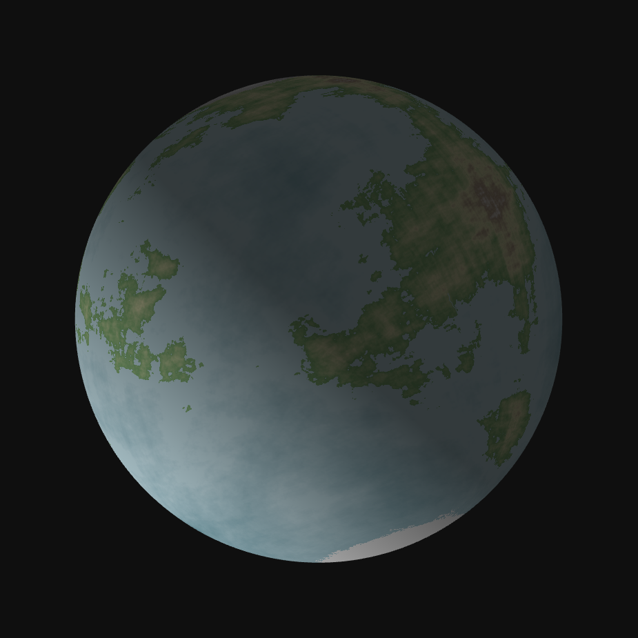

"A distant point, almost worthless in the grand scheme of the universe, but it is us."
– Alexis de Puntkan

Terraferma (tehr-rah-FEHR-mah) is the fifth planet (counting from both Grandio and Esquecida) in the GE System (commonly known as the Sistema Local). It is the only known planet in the universe to harbor life[1]. This is made possible by Terraferma being an ocean world, that is, a planet almost fully covered by water. Most of Terraferma’s water is located in its global ocean, covering 84.6% of its crust. The remaining 15.4% of Terraferma’s crust is land, most of it located within its continents[2]. Most of Terraferma (with the exception of the polar regions and deserts) is somewhat humid. Terraferma’s relief is incredibly varied, it possesses large mountain ranges, volcanoes, large plains and low-lying areas.
It possesses two moons, Lua Major and Lua Menor. In the Sistema Local, Lua Major posseses the largest planet-to-moon ratio of any object being almost 1/4th the size of Terraferma and raising the possibility of it being created by a planet of similar size to Terraferma during the formation of the Sistema Local[3].
The modern Bergian word Terraferma has its origins in the Old Bergian word torreō-firmus meaning “firm land.” Similar spellings were found in every Padovian language (such as Tierrafirme in Montanian and Festesland in Köningian).
[1] Ever since we could think, all sapient life on this planet has wondered, at least once, if there is life in other worlds. I believe Antonio da Silva said it best in his book “In Vita” that ”If there is indeed life on another world, that if Terraferma is truly not alone in this universe, that life is not rare, but plentiful, then one must wonder why haven’t they contacted us. Hath we done some unscrupulous deed to the rest of the universe that they decided to isolate us from them? I hope not.”
The “Antonio paradox” – I prefer the term “avoidance theory” – has been the subject of theories by scholars ever since it was written in twenty years ago. I am not an astronomer, nor am I a student of the stars; I am a historian, but the avoidance theory has deeply interested me. If there truly are infinite worlds, why were we the only one that managed to harbor any life, sapient, non-sapient or even plant-based? I do not believe that the universe avoids us, but that due to the vastness of space, they haven’t been able to reach us. There have been some other theories such as Romano’s “primitive societies” idea. According to him, Terraferma, especially post-Krisisjahr Terraferma, is too primitive for other worlds to care about us.
[2]The definition of a continent is a source of controversy amongst geologists, I have decided to use Gubert et al.’s definition of “a large piece of landmass.” The problem defining a continent comes from the fact that its definition is given mostly by convention between political authorities rather than a strictly geographic definition. Although current breakthroughs by Gubert might suggest a geological definition based on what he calls “continental sliding.”
[3]Main entry: Terra (planet)